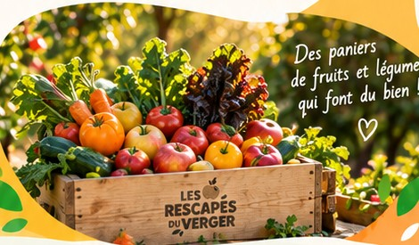

Le panier anti-gaspi, c'est quoi ?
Chaque semaine, nous récupérons auprès de producteurs locaux des fruits et légumes invendus mais parfaitement bons. Nous composons des paniers variés, savoureux et 100% locaux.
Des fruits et légumes savoureux, 100% locaux et de saison, sauvés du gaspillage et livrés directement près de chez vous.
Réserver mon panier →
Chaque semaine, nous récupérons auprès de producteurs locaux des fruits et légumes invendus mais parfaitement bons. Nous composons des paniers variés, savoureux et 100% locaux.
Je remplis le formulaire.
Notre équipe compose votre panier avec soin.
Je viens le chercher au point de retrait choisi.